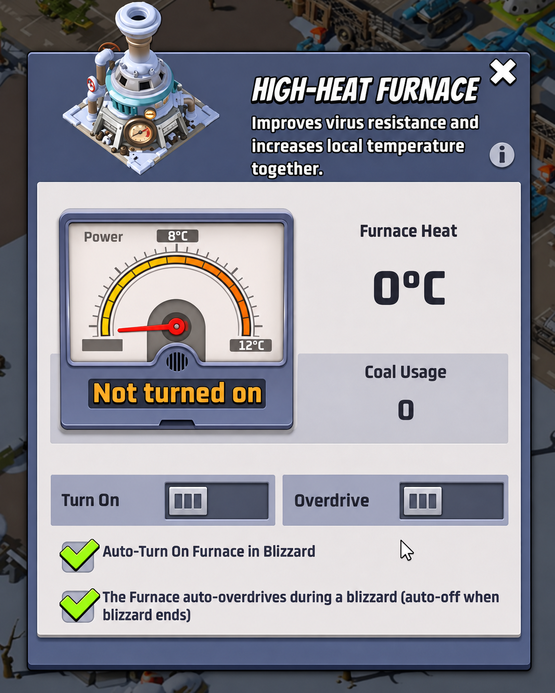
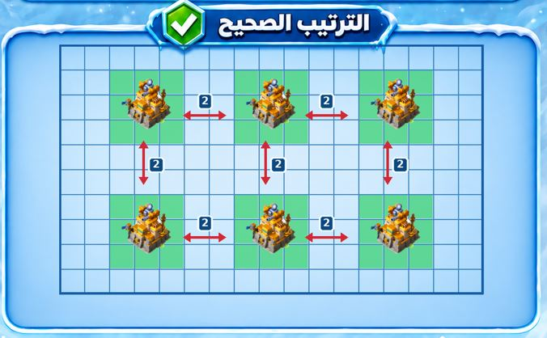
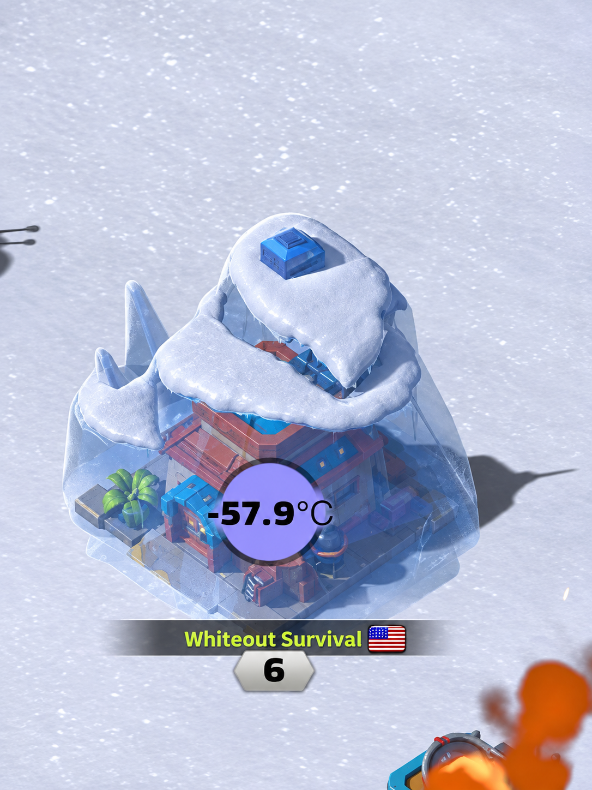
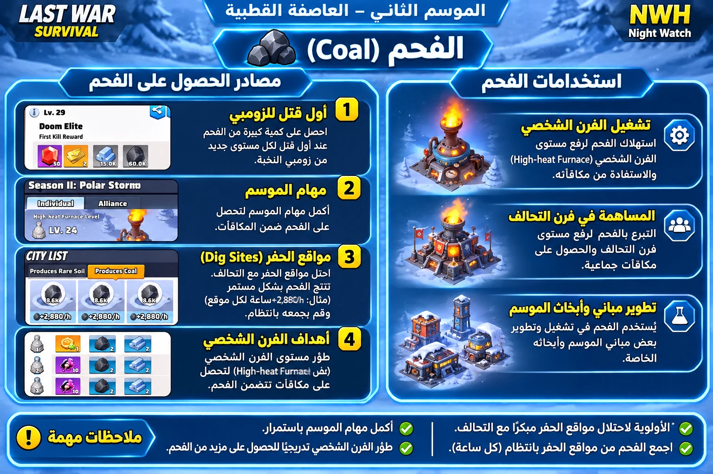
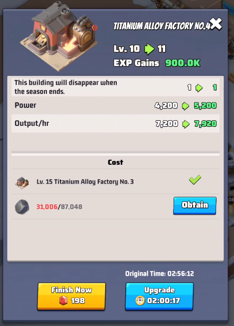
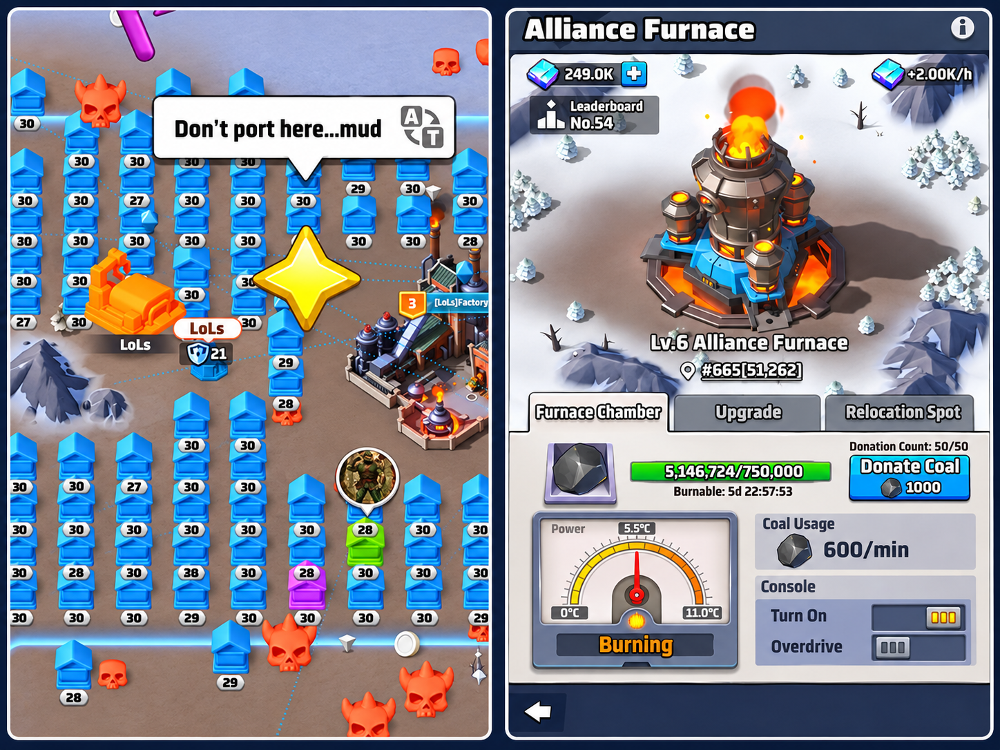
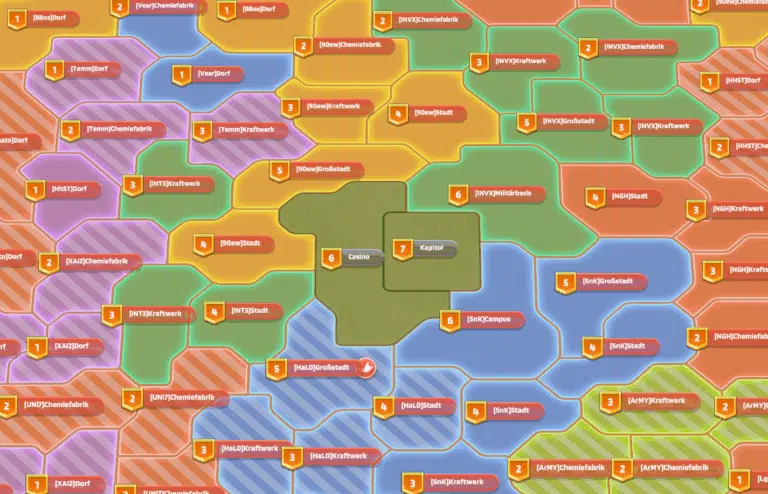
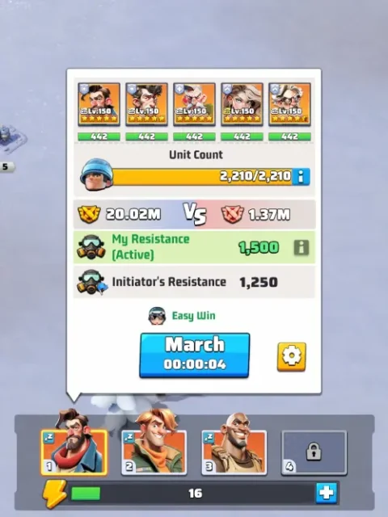
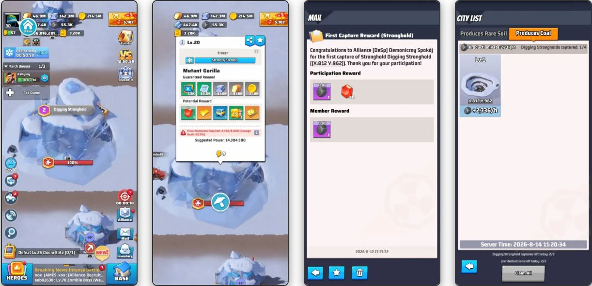

❄️ 2. Sezon — 1. Hafta
Kutup Fırtınası (Polar Storm) — Eksiksiz NWH Rehberi
2. Sezon · 1. HaftaKutup Fırtınası (Polar Storm) — Eksiksiz NWH Rehberi
2. Sezon · 1. Hafta2. Sezon, tamamen Sıcaklık üzerine kurulu yepyeni bir sistem sunuyor. Üssünün kendine özgü bir sıcaklığı var ve çevrendeki haritanın, merkeze yaklaştıkça düşen (Başkent'te -80°C'ye kadar) bir ortam sıcaklığı var. Üssün, zamanla çevresindeki ortam sıcaklığına doğru kayar.
Üssün 5 dakikadan uzun süre -20°C'nin altında kalırsa donar — bu durumda transfer ve Toplanma (Rally) yasaklanır; sadece rastgele ışınlanma ve ittifak transferi mümkün kalır.
Buna karşı elinde şunlar var:

Bu sistemler birbirine bağlıdır: kazı alanlarından gelen kömür, fırınları ve fabrikaları inşa etmek ve geliştirmek için kullanılır; bunlar da seni donmaktan korur ve kutup canavarlarıyla savaşmak ve daha fazla toprak ele geçirmek için gereken virüs direncini açar.
Bunlar, sezonun ilk günü tamamlanması gereken görevlerdir. Her görevin türü (topluluk rehberine göre oyunun sezonluk görevi veya NWH'nin dahili stratejisi) belirtilmiştir.
Her üs 3×3 kare (9 kare) kaplar. NWH'nin benimsediği dağılımda, bitişik her iki üs arasında yatay ve dikey olarak tam olarak iki boş kare bırakılır: 3 dolu kare + 2 boş kare + 3 dolu kare.
Hedefler: NWH'nin etki alanını genişletmek, hareketleri düzenlemek, düşmana açık alanları azaltmak ve İttifak Fırını için korunan bir arka bölge hazırlamak.

Sıcaklık aralığı -270°C ile +300°C arasında değişir. Üssünün sıcaklığı, zamanla çevresindeki ortam sıcaklığına doğru kayar.

| Kar Fırtınası (Blizzard) Seviyesi | Sıcaklık Düşüşü |
|---|---|
| 1. Seviye | -10°C |
| 2. Seviye | -15°C |
| 3. Seviye | -20°C |
| 4. Seviye | -25°C |
| 5. Seviye | -30°C |
| 7. Seviye | -45°C |
| 8. Seviye | -50°C |
Şehir Fırını (kontrol ettiğin şehirler için, tüm şehir karesini ısıtır): 1. seviye = +5°C, 2. seviye = +20°C, 3. seviye = +30°C, 4. seviye = +40°C, 5. seviye = +50°C, 6. seviye = +60°C.
Nükleer Fırın (Başkent'te): aktive edildiğinde tüm haritayı ısıtır, harita genelinde yaklaşık +10°C ekler.
Kömür kaynakları: Kazı Alanları (sürekli üretim), Sezon Paketi ve Haftalık Paket, dağınık Tedarik Koleksiyonları (Supply Collections — sadece toprağın sıcaklığı 0°C'ye ulaştığında belirir), sezon görevleri, Hedefler (Goals), radar görevleri, zombi öldürme ödülleri, Hero's Return biletleri ve bir şehir veya kazı alanının ilk işgali. (Polar Dishes/Snowflake besleme etkinliği ekstra bir kömür kaynağı ekler ama 2. haftadan başlar — bu rehberin kapsamı dışındadır.)
Kullanım alanları: sezonluk yapıları inşa etmek ve geliştirmek, kişisel fırını çalıştırmak, İttifak Fırınına bağış yapmak.

Üretim 1. seviyede saatte 720'den başlar ve 30. seviyede saatte 21.600'e ulaşır — her seviye sabit 720/saat ekler.
Yeni bir fabrika, sadece önceki fabrika 15. seviyeye ulaştığında açılır. Haftalık Paket (Weekly Pass) hemen ekstra bir fabrika verir ve bu fabrika sadece paketin geçerlilik süresi boyunca üretime devam eder — bu ücretli ve isteğe bağlı bir özelliktir, paket bittiğinde sona erer, kalıcı bir kazanım değildir ve 1. hafta ilerlemesini tamamlamak için gerekli de değildir.
| Seviye | Üretim/saat | Yükseltme maliyeti (kömür, yaklaşık) |
|---|---|---|
| 1 | 720 | — |
| 2 | 1.440 | ≈ 1.400 |
| 30 | 21.600 | ≈ 359.300 (indirimler öncesi) |

1. seviye toprak üzerine kurulur. Onarım sürecini başlatmak ve yönetmek (şu yoldan: İttifak ← İttifak Fırını ← Koordinatlar) sadece R4/R5 ile sınırlıdır. Onarıma gerçek katılım ise herhangi bir üyenin takımlarını fırını güçlendirmeye göndermesiyle olur — 1. Sezondaki kale onarımıyla aynı mekanik — buna 20 güçlendirmeye kadar katılabilir (süreci tamamlamak için zorunlu bir sayı değildir). Sadece menzili içindeki üsleri ısıtır — bu yüzden üyelerin yakınında toplanması gerekir.
Kişisel ısısı düşük veya kişisel fırını daha az gelişmiş olan üyeler, ısıtma menzilinden yararlanmak için İttifak Fırınına daha yakın konumlandırılabilir — bu menzilin sınırları içinde ve NWH'nin genel yerleşim kararlarıyla (Bölüm 3) uyumlu şekilde.
| Seviye | Kömür/dk | Isı | Overdrive Isısı | Kömür/dk (Overdrive) | Depolama |
|---|---|---|---|---|---|
| 1 | 300 | 3°C | 6°C | 1.200 | 200K |
| 5 | 540 | 5°C | 10°C | 2.160 | 600K |
| 10 | 840 | 7.5°C | 15°C | 3.360 | 1.450K |
| 20 | 1.440 | 12.5°C | 25°C | 5.760 | 4.150K |
Dayanıklılık (Durability), 1. seviyede 205K'dan 20. seviyede 300K'ya kadar değişir. Kaynak, 8. seviye için 340K değeri veriyor — 7. seviye yaklaşık 235K ve 9. seviye yaklaşık 245K iken — yani 8. seviye değeri, çevresindeki seviyelerden mantıksız biçimde yüksek. Bu çelişkiyi ekstrapolasyonla "düzeltmeden" kaynakta göründüğü gibi bırakıyoruz ve sadece referans tablosunda olası bir yazım hatası olarak işaretliyoruz.
Tedarik Koleksiyonları (Supply Collections): sadece toprak 0°C'ye ulaştığında belirir, günde en fazla 5 talep denemesi hakkı vardır. Donmuşsa, İttifak Fırını ısısı veya buz kırma gerektirir (vuruş başına 1.000 dayanıklılık, 5 enerji puanı).
İttifak Fırınının kolektif hedeflerinin ilerlemesini (ve diğer kolektif hedefleri) takip etmek için şuraya bakılabilir: 2. Sezon ← Hedefler ← İttifak (Season 2 → Goals → Alliance).

1. Hafta, destekleyici etkinliklerin yanı sıra 6 ana sezonluk görev (Cold Wave Alert, Yüksek Isı Fırını, Titanyum Fabrikası, İttifak Fırını, Köy açılışı, Kasaba açılışı) içerir. Karışıklığı önlemek için aşağıdaki her kart şunlar arasında açıkça ayrım yapar:

Sahip olunması gereken ilk toprak 1. seviye bir Kazı Alanıdır. Sonraki genişleme, bitişiklik prensibini izler (köşelerden çapraz bağlantı dahil).
| Kazı Alanı Seviyesi | Gerekli Virüs Direnci (yaklaşık) |
|---|---|
| 1. Seviye | 4.000 |
| 2. Seviye | 6.500 |
| 3. Seviye | 8.500 |
| 4. Seviye | 9.500 |
| 6. Seviye | 10.500 |
| Kazı Alanı Seviyesi | Kömür/saat | Nadir Toprak/saat |
|---|---|---|
| 1. Seviye | 2.736 | 100 |
| 2. Seviye | 2.880 | 110 |
| 3. Seviye | 3.024 | 120 |
| 4. Seviye | 3.168 | 130 |
| 5. Seviye | 3.312 | 140 |
| 6. Seviye | 3.456 | 150 |
Toplanma liderinin virüs direnci tüm katılımcılara uygulanır, ancak kendi direnci liderinkinden yüksek olanlar hariç — bu üye kendi kişisel değerini korur.
Örnek: Lider = 2.500 — A üyesi = 3.000 — B, C ve D üyeleri = her biri 1.000.
Savaşta fiilen uygulanan direnç: Lider = 2.500 — A = 3.000 (daha yüksek olduğu için kendi değerini korur) — B, C, D = her biri 2.500 (lider seviyesine yükselir).
Bu yüzden kazı alanlarına karşı toplanmaları virüs direnci yüksek üyelerin yönetmesi tercih edilir — bu, diğer katılımcıların bu dirençten yararlanmasına ve daha hızlı, daha güvenli işgallere ulaşmasına olanak tanır.

Birimlerin canavarlarla eşleşmesi: Goril (uçak) füze birimlerine karşı zayıftır, Ayı (füze) tanklara karşı zayıftır, Mamut (tank) uçaklara karşı zayıftır. Tank gücü ağırlıklı ittifaklara önce Kutup Ayılarını hedeflemeleri önerilir.
| Şehir Seviyesi | Açılış Zamanı |
|---|---|
| 1. Seviye | 1. Hafta, 3. gün + 12 saat |
| 2. Seviye | 1. Hafta, 6. gün + 12 saat |
| 3. Seviye | 2. Hafta, 3. gün + 12 saat |
| 4. Seviye | 2. Hafta, 6. gün + 12 saat |
| 5. Seviye | 3. Hafta, 3. gün + 12 saat |
| 6. Seviye | 3. Hafta, 6. gün + 12 saat |
| 7. Seviye | 4. Hafta, 7. gün + 12 saat |
Maksimum şehir sahipliği: 6 şehir. 6. seviye şehirler en değerli olanlardır ve Başkent'in kuzeyinde, doğusunda, güneyinde ve batısında bulunur.
| Şehir Seviyesi | Nadir Toprak/saat (yaklaşık) |
|---|---|
| 1 | 350 |
| 2 | 400 |
| 3 | 450 |
| 4 | 800 |
| 5 | 900 |
| 6 | 1.000 |

Bu rehber, aşağıdaki kaynakların analiz ve sentezine dayanmaktadır; bunlar resmi olmayan topluluk rehberleridir (oyunun resmi yayıncısı tarafından yayınlanmamıştır). Rakamlar oyun güncellemeleriyle değişebilir — önemli kararlar almadan önce her zaman oyun içinde doğrula.